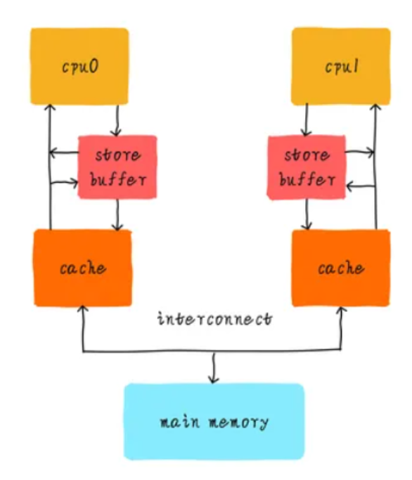

Memory Consistency
[toc]
概述
一个栗子：
可以从现实世界中直观的感受一下我们为什么需要 consistency model。请考虑一所在线发布其课程安排的大学，假设计算机体系结构课程原定在 152 室。开课前一天，大学注册处决定将课程搬到 252 室。注册处发送电子邮件，要求网站管理员更新在线课程表，几分钟后，注册处会向所有注册的学生发送一条短信，要求学生去检查新的课程表。想象这样一个场景，网站管理员太忙而无法立即发布更新，一个勤奋的学生收到短信后，立即查看在线课程表，会观察到课程位置认为 152 室。尽管在线课程表最终更新为 252 室，并且注册处以正确的顺序执行“写入”，但这位勤奋的学生以不同的顺序观察它们，因此去了错误的房间。
我们可以观察到电子邮件系统、人工网络管理员和短信系统的组合，代表了一个极其弱的 consistency model。为了防止勤奋的学生走错房间，大学注册处需要在发送电子邮件之后执行 FENCE 操作，以确保在线课程表在发送短信之前已经更新。
计算机中的栗子：
static int x = 0, y = 0;
static int r1, r2;
static void int thread_cpu0(void)
{
x = 1; /* 1) */
r1 = y; /* 2) */
}
static void int thread_cpu1(void)
{
y = 1; /* 3) */
r2 = x; /* 4) */
}
static void check_after_assign(void)
{
printk("r1 = %d, r2 = %d\n", r1, r2);
}
在多核系统上，我们知道两个函数4条操作执行可以互相交错。理论上来我们有以下6种排列组合。
1) 2) 3) 4)
1) 3) 2) 4)
1) 3) 4) 2)
3) 4) 1) 2)
3) 1) 4) 2)
3) 1) 2) 4)
当我们确保thread_cpu0和thread_cpu1执行完成后，调用check_after_assign()会打印什么提示信息呢？根据以上6种组合，我们可能会得到如下3种结果。
r1 = 1, r2 = 1
r1 = 0, r2 = 1 // 1) 2) 3) 4)
r1 = 1, r2 = 0 // 3) 4) 1) 2)
这里就出了个问题，每个处理器都按照各自正确的顺序在执行，但r1 或者 r2 没有拿到正确的值，这就是王齐老师总是提到的"序"的问题。具有乱序处理器核心、write buffer、prefetching 和 multiple cache banks 的共享内存硬件中也可能发生类似的行为。
有个问题，有了cache一致性，为什么还会出这种问题呢？如，write buffer 可能导致这个问题，数据都没到cache里，没到cache里，缓存一致性就不起作用了。

此外，加入write buffer，可能出现更糟糕的情况，如 1) 3) 2) 4) 这个case，可能写操作都暂存在write buffer中，另一个core 互相全都没看见对方的修改，直接输出全是0。
r1 = 0, r2 = 0
看起来像是按照 3) 4) 1) 2) 这顺序执行的。
从这个例子可以看出，在共享存储系统中，需要对多处理器的访存操作的次序做出限制，才能保证程序执行的正确。
存储一致性模型是多处理器系统设计者与应用程序员之间的一种约定，它给出了正确编写程序的标准，使得程序员无须考虑具体访存次序就能编写正确程序，而系统设计者则可以根据这个约定来优化设计提高性能。系统设计者通过对各处理器的访存操作完成次序加以必要的约束来满足存储一致性模型的要求。
现代计算机为了提升处理性能，在硬件层面加入了各种优化等，最终导致了内存乱序访问的问题。由于不同处理器架构在硬件层面的优化程度不同，导致可能产生的内存乱序访问的行为也存在很大的差异。**内存一致性模型描述了这些可能产生的乱序访问行为的规则以及约束，以便软件开发人员在不清楚硬件实现细节的情况下，能够理解硬件的行为并正确编写并发代码。**比如，某个架构遵循TSO模型，作为软件工程师，你只需要知道，这个标准，按这个标准去写代码就行了，不用关心硬件的实现细节。
内存一致性模型（Memory Consistency Model）就是用来描述多处理器对共享存储器的访问行为，在不同的内存一致性模型里，多线程对共享存储器的访问行为有非常大的差别。这些差别会严重影响程序的执行逻辑，甚至会造成软件逻辑问题。
“单核乱序对程序员是透明的，只有其他核才会受到乱序影响” —— core 0 能看到自己write buffer 中的内容，core1 也能看到自己的。
与缓存一致性的区别
在英文里，这两个是不同的单词memory consistency and cache coherence，中文里不知道谁最先翻译的，给整成一样的了，这会带来很大的误解。
cache一致性关注的是多个CPU看到一个地址的数据是否一致。内容一致
而内存一致性关注的是多个CPU看到多个地址数据读写的次序。次序关系
一个关注的是一个地址，一个关注的是多个地址的顺序。还是有点区别。
常见模型
内存一致性关注对内存的读写操作访问，由此可得到4种不同的指令组合，依次为Store-Load、Store-Store、Load-Store、Load-Load，通过允许调整这些指令组合执行的顺序，可以获得不同的内存一致性模型。目前有多种内存一致性模型，从上到下模型的限制由强到弱，依次为：
顺序一致性（Sequential Consistency，简写SC）模型； 完全存储定序（Total Store Order，简写TSO）模型；x86-64 部分存储定序（Part Store Order，简写PSO）模型； 宽松存储（Relax Memory Order，简写RMO）模型。
这些存储一致性模型对访存事件次序的限制不同，因而对程序员的要求以及所能得到的性能也不一样。存储一致性模型对访存事件次序施加的限制越弱越有利于提高性能，但编程越难。下面介绍具体的存储一致性模型。
这四种内存一致性模型描述了在多处理器系统中处理器之间共享内存的不同策略。以下是对每种模型的详细解释和示例：
1. 顺序一致性模型（Sequential Consistency, SC）
顺序一致性模型要求所有处理器的内存操作按照一个统一的全局顺序执行，即每个处理器的操作顺序在全局顺序中保持一致。
特点：
- 所有处理器的内存操作严格按照程序中指定的顺序执行。
- 在所有处理器看来，所有内存操作发生的顺序是一致的。
示例：
1 -> 3 -> 2 -> 4
3 -> 1 -> 4 -> 2
1 -> 3 -> 4 -> 2 // 是否为可行的顺序
3 -> 1 -> 2 -> 4
-
各个处理器上的操作顺序必须按照程序的顺序执行。
-
所有处理器看到的操作顺序一致。
解读
分析 1 -> 3 -> 4 -> 2
1: x = 1（CPU 0）3: y = 1（CPU 1）4: r2 = x（CPU 1）2: r1 = y（CPU 0）
我们需要检查 CPU 0 和 CPU 1 各自的操作顺序：
- 对于
CPU 0，顺序是1 -> 2 - 对于
CPU 1，顺序是3 -> 4
在顺序一致性模型下，我们必须确保每个处理器的操作顺序在全局视图中保持一致。
全局视图的一致性
根据顺序 1 -> 3 -> 4 -> 2，我们有：
- 操作
4读取x，应该看到的是操作1的结果，即r2 = 1 - 操作
2读取y，应该看到的是操作3的结果，即r1 = 1
2. 完全存储定序模型（Total Store Order, TSO）
TSO 模型允许写操作的重排序，但读取操作在看到前一写操作的结果之前不会继续。store和load的组合有4种。分别是store-store，store-load，load-load和load-store。TSO模型中，只存在store-load存在乱序，另外3种内存操作不存在乱序。
特点：
- 写操作可以重排序，但在读操作发生之前必须确保前一写操作的可见性。
- 写操作被推送到写缓冲区，而读操作可以从写缓冲区中读取未提交的写操作。
示例：
1 -> 3 -> 2 -> 4
3 -> 1 -> 4 -> 2
1 -> 2 -> 3 -> 4
3 -> 4 -> 1 -> 2
但必须确保读操作看到之前写操作的结果。
3. 部分存储定序模型（Partial Store Order, PSO）
PSO 模型允许写操作和读操作都进行重排序，但对某些特定的内存操作需要保持顺序。
处理器一致性（Processor Consistency, PC） 松散一致性（Relaxed Consistency, RC）
特点：
- 写操作和读操作可以进行更广泛的重排序。
- 通过显式的同步操作（如内存屏障）来保证某些操作的顺序性。
示例：
1 -> 3 -> 2 -> 4
3 -> 1 -> 4 -> 2
1 -> 2 -> 3 -> 4
3 -> 4 -> 1 -> 2
2 -> 1 -> 4 -> 3
4 -> 3 -> 2 -> 1
但通过内存屏障，可以强制某些操作按顺序执行。
4. 宽松存储模型（Relaxed Memory Order, RMO）
RMO 模型允许最广泛的重排序，包括读写操作的重排序，通过显式的同步操作来保证必要的顺序。
特点：
- 读操作和写操作几乎可以完全自由地重排序。
- 通过同步原语（如内存屏障）来保证必要的顺序。
示例：
1 -> 3 -> 2 -> 4
3 -> 1 -> 4 -> 2
1 -> 2 -> 3 -> 4
3 -> 4 -> 1 -> 2
2 -> 1 -> 4 -> 3
4 -> 3 -> 2 -> 1
2 -> 4 -> 1 -> 3
4 -> 2 -> 3 -> 1
通过使用内存屏障，程序员可以强制某些关键操作按顺序执行，以确保数据一致性。
总结表格
| 组合 | SC | TSO | PSO | RMO |
|---|---|---|---|---|
| Store-Store | 禁止重排序 | 禁止重排序 | Yes | Yes |
| Store-Load | 禁止重排序 | Yes | Yes | Yes |
| Load-Load | 禁止重排序 | 禁止重排序 | 禁止重排序 | Yes |
| Load-Store | 禁止重排序 | 禁止重排序 | 禁止重排序 | Yes |
如何保证顺序性
如果我们确实不希望看到r1 = 0, r2 = 0的结果，我们该怎么办呢？Linux内核中提供了smp_mb()宏对不同架构的指令进行封装，smp_mb()的作用是阻止它后面的读写操作不会乱序到宏前面的指令前执行。他就像是个屏障一样，不容逾越。
这个屏障把代码分成了两部分，每一个部分内部可以乱序，但之间不能乱。
参考：
-
A Primer on Memory Consistency and Cache Coherence (2nd Edition)
-
https://blog.csdn.net/qq_29328443/article/details/107616795
-
https://blog.csdn.net/anyegongjuezjd/article/details/125954805
-
https://zhuanlan.zhihu.com/p/141655129?from_voters_page=true